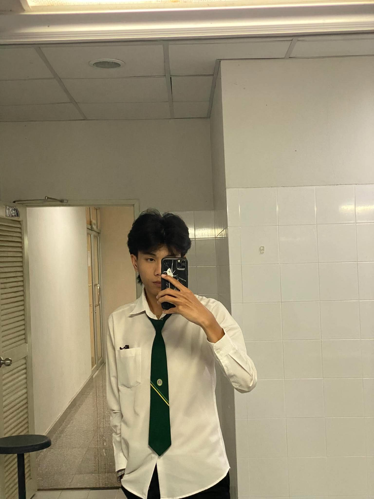
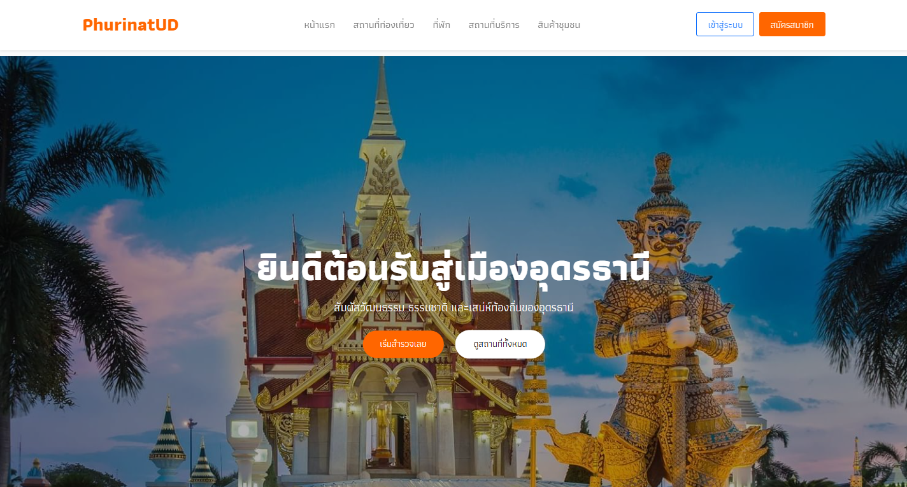

Development
เขียนโค้ดและพัฒนาเว็บไซต์
สวัสดีครับ ผม
PHURINAT SOMSRI
นักศึกษาสาขาวิทยาการคอมพิวเตอร์
มหาวิทยาลัยราชภัฏอุดรธานี

01 / ABOUT ME
ผมสนใจการพัฒนาเว็บไซต์
และการวิเคราะห์ข้อมูล
ปัจจุบันผมศึกษาอยู่สาขาวิทยาการคอมพิวเตอร์ มหาวิทยาลัยราชภัฏอุดรธานี สนใจการพัฒนาเว็บไซต์และแอปพลิเคชัน รวมถึงการวิเคราะห์ข้อมูลและปัญญาประดิษฐ์
ระหว่างเรียน ผมได้ทำเว็บไซต์แนะนำจังหวัดอุดรธานี ร่วมพัฒนาผลงาน InjectSim VR และเข้าร่วมการแข่งขัน Startup Pitching ประสบการณ์เหล่านี้ทำให้ผมได้ฝึกทั้งการพัฒนาโปรแกรม การทำงานเป็นทีม และการนำเสนอผลงาน
02 / MY TOOLKIT
ภาษาและเครื่องมือที่ใช้ในการเรียน
และการทำโครงงาน
เขียนโค้ดและพัฒนาเว็บไซต์
สำรวจข้อมูลและเรียนรู้การสร้างโมเดล
ออกแบบและจัดการการทำงาน
03 / SELECTED WORK
PROJECT / 01
สื่อการเรียนรู้ผ่านโลกเสมือนจริง
ร่วมพัฒนาสื่อจำลองการฝึกฉีดยาด้วยเทคโนโลยี Virtual Reality และนำเสนอการใช้งานผ่านอุปกรณ์ VR เพื่อประกอบการเรียนรู้และฝึกทักษะ

เปิดเว็บไซต์PROJECT / 02 · WEB DEVELOPMENT
เว็บไซต์แนะนำจังหวัดอุดรธานี รวบรวมข้อมูลสำหรับการท่องเที่ยว พร้อมระบบเข้าสู่ระบบเพื่อเข้าถึงเนื้อหา
PROJECT / 03 · STARTUP & PITCHING
ร่วมเสนอแนวคิดธุรกิจนวัตกรรม ได้รับรางวัลรองชนะเลิศอันดับ 2 จาก UDRU Startup Pitching และเป็นตัวแทนหนึ่งใน 5 ทีมสู่การแข่งขันระดับภูมิภาค
ดูประสบการณ์เพิ่มเติม04 / EXPERIENCES
การแข่งขันและกิจกรรมที่เข้าร่วม
เข้าร่วมกิจกรรม National Software Contest (NSC) ณ อุทยานวิทยาศาสตร์ภาคตะวันออกเฉียงเหนือ 1
เข้าร่วมรอบ Regional Pitching กับทีม SWAPWAI ณ อุทยานวิทยาศาสตร์ มหาวิทยาลัยขอนแก่น
เข้าร่วมการประกวด UDRU Ambassador 2024 ของมหาวิทยาลัยราชภัฏอุดรธานี
เตรียมงานนำเสนอเกี่ยวกับการเขียนโปรแกรมควบคุมหุ่นยนต์
05 / GET IN TOUCH
สามารถติดต่อผมผ่านอีเมล หรือดูผลงานเพิ่มเติมได้ที่ GitHub